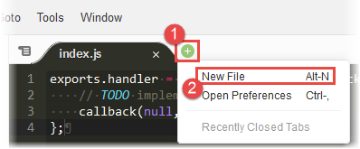

Creating functions using the AWS Lambda console editor
The Lambda console provides a code editor for languages that do not require compiling, such as Node.js or Python. The code editor in the AWS Lambda console enables you to write, test, and view the execution results of your Lambda function code.
The code editor includes the menu bar, windows, and the editor pane.

For a list of what the commands do, see the Menu commands reference in the AWS Cloud9 User Guide. Note that some of the commands listed in that reference are not available in the code editor.
Topics
Working with files and folders
You can use the Environment window in the code editor to create, open, and manage files for your function.
To show or hide the Environment window, choose the Environment button. If the Environment button is not visible, choose Window, Environment on the menu bar.

To open a single file and show its contents in the editor pane, double-click the file in the Environment window.
To open multiple files and show their contents in the editor pane, choose the files in the Environment window. Right-click the selection, and then choose Open.
To create a new file, do one of the following:
-
In the Environment window, right-click the folder where you want the new file to go, and then choose New File. Type the file's name and extension, and then press Enter .
-
Choose File, New File on the menu bar. When you're ready to save the file, choose File, Save or File, Save As on the menu bar. Then use the Save As dialog box that displays to name the file and choose where to save it.
-
In the tab buttons bar in the editor pane, choose the + button, and then choose New File. When you're ready to save the file, choose File, Save or File, Save As on the menu bar. Then use the Save As dialog box that displays to name the file and choose where to save it.

To create a new folder, right-click the folder in the Environment window where you want the new folder to go, and then choose New Folder. Type the folder's name, and then press Enter .
To save a file, with the file open and its contents visible in the editor pane, choose File, Save on the menu bar.
To rename a file or folder, right-click the file or folder in the Environment window. Type the replacement name, and then press Enter .
To delete files or folders, choose the files or folders in the Environment window. Right-click the selection, and then choose Delete. Then confirm the deletion by choosing Yes (for a single selection) or Yes to All.
To cut, copy, paste, or duplicate files or folders, choose the files or folders in the Environment window. Right-click the selection, and then choose Cut, Copy, Paste, or Duplicate, respectively.
To collapse folders, choose the gear icon in the Environment window, and then choose Collapse All Folders.
To show or hide hidden files, choose the gear icon in the Environment window, and then choose Show Hidden Files.
Working with code
Use the editor pane in the code editor to view and write code.
Working with tab buttons
Use the tab buttons bar to select, view, and create files.

To display an open file's contents, do one of the following:
-
Choose the file's tab.
-
Choose the drop-down menu button in the tab buttons bar, and then choose the file's name.

To close an open file, do one of the following:
-
Choose the X icon in the file's tab.
-
Choose the file's tab. Then choose the drop-down menu button in the tab buttons bar, and choose Close Pane.
To close multiple open files, choose the drop-down menu in the tab buttons bar, and then choose Close All Tabs in All Panes or Close All But Current Tab as needed.
To create a new file, choose the + button in the tab buttons bar, and then choose New File. When you're ready to save the file, choose File, Save or File, Save As on the menu bar. Then use the Save As dialog box that displays to name the file and choose where to save it.
Working with the status bar
Use the status bar to move quickly to a line in the active file and to change how code is displayed.
To move quickly to a line in the active file, choose the line selector, type the line number to go to, and then press Enter .

To change the code color scheme in the active file, choose the code color scheme selector, and then choose the new code color scheme.

To change in the active file whether soft tabs or spaces are used, the tab size, or whether to convert to spaces or tabs, choose the spaces and tabs selector, and then choose the new settings.
To change for all files whether to show or hide invisible characters or the gutter, auto-pair brackets or quotes, wrap lines, or the font size, choose the gear icon, and then choose the new settings.

Working in fullscreen mode
You can expand the code editor to get more room to work with your code.
To expand the code editor to the edges of the web browser window, choose the Toggle fullscreen button in the menu bar.
To shrink the code editor to its original size, choose the Toggle fullscreen button again.
In fullscreen mode, additional options are displayed on the menu bar: Save and Test. Choosing Save saves the function code. Choosing Test or Configure Events enables you to create or edit the function's test events.
Working with preferences
You can change various code editor settings such as which coding hints and warnings are displayed, code folding behaviors, code autocompletion behaviors, and much more.
To change code editor settings, choose the Preferences gear icon in the menu bar.

For a list of what the settings do, see the following references in the AWS Cloud9 User Guide.
Note that some of the settings listed in those references are not available in the code editor.